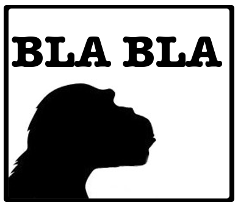
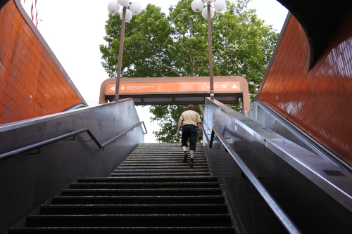

Het gaat uiteindelijk gebeuren: Ik ga twee maanden naar Berlijn. De gedachte leeft al bijna 10 jaar, maar nu gaat het werkelijk gebeuren.
Ik ga een 8 weken durende "Intensiv Kurs" bij het Goethe-Institut in Berlijn volgen.
